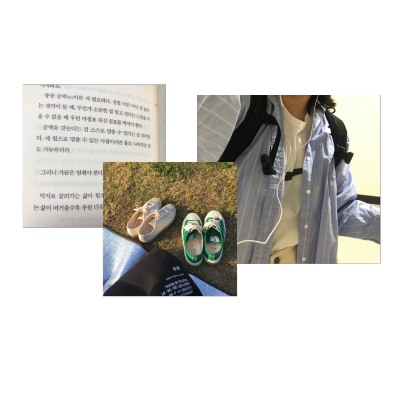

About me!
한예은
[22살, 단국대학교 물리학과 재학중]
혈액형 : O형
취미 : 사진찍기
최근에 읽은 책 : 언어의 온도
좋아하는 계절 : 겨울
즐겨듣는 노래
저는 처음보는 사람에게 낯을 많이 가리지만
의외로 웃긴 구석이 존재하는 사람입니다.
제가 말이 없고 지루해보이면 그건 단지
오해에요!
저는 공학적인 이야기들을 좋아해요
그래서 교양도 공학이야기를 듣습니다
